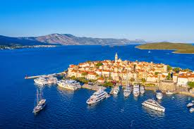

تتميز جزيرة كوركولا بأنها تحتوي على أبراج مستديره التي تقع فوقها مجموعة من المنازل ذات الأسطح الحمراء تتميز بالمزخرفه و يمتلك الكثير من الأفراض هذه المنازل الرائعه
تتميز جزيرة كوركولا بأنها غنيه بالفن و الثقافه فضلاعن الطبيعه الجميله مثل العديد من الشواطئ الصغيرة و المنعزله و الخلجان و بها الجزر الصغيره الغير مأهوله بالسكان
تتميز جزيرة كوركولابأن يوجد بها البحر الأدرياتيكي الاكثر شيوعًا بالسكان و هذا البحر يجزب العديد من السياح لأنه يتمتع بالمناظر الجزابه والطبيعيه
تتميز جزيرة الكوركولا بأنه محاط على جوانبها العديد من المواقع الأثريه التي يعود تاريخها الى ألاف السنين قبل الميلاد لكن اكتشفوا هذه المواقع بعد سنين و هذا كان غير متوقع
تقع جزيرة كوركولا بالقرب من قرية سولين المعروفة بالأحواض المالحة و شواطئها الجميلة و أنها تتميز بالأحواض المالحة التي يوجد بها الكثير من الأسماك الرائعه
